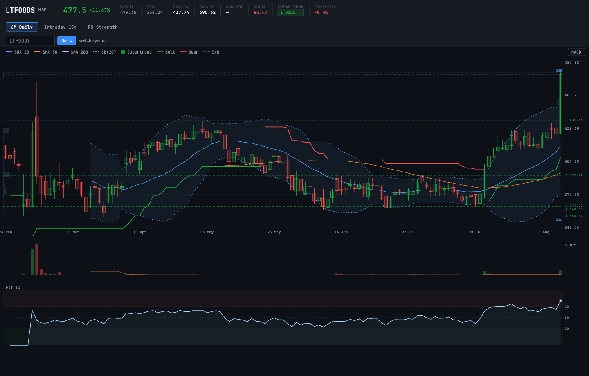

A branded basmati and specialty-rice compounder with +27.9% Q1 FY27 revenue growth, a CRISIL AA/Stable credit upgrade, and improving international distribution — technically extended after the Aug 2026 breakout; better entry on a pullback.
Separate the company from the entry. LT Foods Limited has a genuine branded-food franchise with scale and credit quality. The stock has just printed a large-volume breakout and is technically extended.
The Daawat and Royal brands create pricing power in a commodity category — the question is whether Q1 FY27 momentum can persist without margin compression.
LT Foods Limited operates at the branded end of the basmati and specialty-rice value chain. The model spans sourcing, aging, processing, and distribution under the Daawat brand (≈25% India market share) and Royal brand (#1 in North America, ≈49% share). Selling branded rice at a premium to generic commodity grades is the core moat — it translates into better pricing power, inventory management, and retailer shelf permanence.
The financial trajectory confirms the model: revenue compounded at ~16% over FY23–FY26, the credit rating was upgraded to CRISIL AA/Stable in Feb 2026, and Q1 FY27 showed revenue ++27.9% YoY led by North America (+49%) and India e-commerce. Working capital improved materially — inventory days fell from 221 to 187.
Broker consensus is constructive: LT Foods holds Buy consensus with average target INR 509-519. Motilal Oswal maintains Buy TP INR 520. Daawat (25% India | LT Foods Q1 FY27 consolidated revenue +27.9% YoY to Rs 3152 Cr. EBITDA +20% t.
CRISIL upgraded LT Foods to AA/Stable from AA-/Positive. Interest coverage 10-11x. Annual FCF Rs 800-900 Cr. Strong bran.
Agent Adda scores from local stage snapshot (2026-08-24). Useful sector-relative ranking signals — not standalone buy/sell rules.
The score stack is constructive but not exceptional. Financial strength (77) and institutional bias (75) are the best components. Earnings quality (63) is acceptable. Sales growth (68.3) reflects the strong revenue trajectory.
Daawat is the India consumer query; Royal is the North America brand; LT Foods Limited is the NSE-listed parent entity.
LT Foods is a global specialty-rice and packaged-foods company. The model spans procurement (Punjab/Haryana basmati belt), aging, milling, branded packing, and multichannel distribution — making it more than a commodity-rice exporter.
Daawat (~25% India branded-basmati share) and Royal (#1 in North America, ~49% U.S. basmati import share). Brand strength supports premiumization and reduces pure-commodity price sensitivity.
Revenue from 80+ countries: India (domestic growth + e-commerce >40% on key platforms), North America (+49% Q1 FY27, includes Golden Star consolidation), Europe, Middle East, and Rest of World.
Revenue compounded at ~16% over FY23–FY26. PAT growth is positive but lagged sales and operating profit — watch OPM and interest/depreciation drag.
| Period | Revenue | Op. Profit | OPM | PAT | EPS | Payout |
|---|---|---|---|---|---|---|
| FY2023 | 6,936 | 701 | 10% | 423 | 11.60 | 9% |
| FY2024 | 7,772 | 938 | 12% | 598 | 17.09 | 9% |
| FY2025 | 8,681 | 979 | 11% | 612 | 17.43 | 17% |
| FY2026 | 10,946 | 1,159 | 11% | 625 | 18.01 | 17% |
| TTM | 11,633 | 1,245 | 11% | 640 | 18.44 | n/a |
Last 6 quarters from Screener.in consolidated. Jun 2026: revenue ++27.9% YoY — strongest quarter in the window.
| Quarter | Revenue | Op. Profit | OPM | PAT | EPS |
|---|---|---|---|---|---|
| Mar 2025 | 2,228 | 258 | 12% | 161 | 4.62 |
| Jun 2025 | 2,464 | 265 | 11% | 168 | 4.85 |
| Sep 2025 | 2,766 | 309 | 11% | 164 | 4.72 |
| Dec 2025 | 2,809 | 314 | 11% | 157 | 4.53 |
| Mar 2026 | 2,907 <span class="green">(+30.5%)</span> | 267 <span class="green">(+3.5%)</span> | 9% | 136 <span class="red">(-15.5%)</span> | 3.91 |
| Jun 2026 | 3,152 <span class="green">(+27.9%)</span> | 354 <span class="green">(+33.6%)</span> | 11% | 183 <span class="green">(+8.9%)</span> | 5.28 |
Borrowings rose with inventory and working-capital needs. D/E remains manageable. Net debt/EBITDA ~0.48x per Q1 concall.
| Balance sheet item | Mar 2024 | Mar 2025 | Mar 2026 |
|---|---|---|---|
| Equity Capital | 35 | 35 | 35 |
| Reserves | 3,337 | 3,819 | 4,486 |
| Borrowings+ | 917 | 1,261 | 1,610 |
| Total Liabilities | 6,042 | 7,413 | 9,064 |
| Fixed Assets+ | 1,160 | 1,404 | 1,852 |
| Total Assets | 6,042 | 7,413 | 9,064 |
| Cash flow item | Mar 2024 | Mar 2025 | Mar 2026 |
|---|---|---|---|
| CFO | 757 | 462 | 910 |
| CFI | -201 | -219 | -845 |
| CFF | -538 | -150 | -127 |
| FCF | 556 | 224 | 554 |
| Net Cash | 17 | 93 | -62 |
Q1 FY27 earnings call was held on July 30, 2026. Read-through: management tone is confident, North America + India both firing, organic segment margin recovery targeted by year-end.
| Source | Key takeaway |
|---|---|
| LT Foods Q1 FY27 Results: PAT +8.9% | AngelOne | LT Foods Q1 FY27 consolidated net profit +8.9% to Rs 183 Cr. Revenue +26.4% to Rs 3161 Cr. International revenue 71%. Basmati/specialty rice revenue +34%, volume +11%. |
| LT Foods Analyst Review 2026 | Univest | LT Foods holds Buy consensus with average target INR 509-519. Motilal Oswal maintains Buy TP INR 520. Daawat (25% India mkt share) and Royal (49% North America share) provide durable pricing power. |
| LT Foods Q1 FY27: Revenue +27.9% | Investing.com | LT Foods Q1 FY27 consolidated revenue +27.9% YoY to Rs 3152 Cr. EBITDA +20% to Rs 363 Cr. North America +49%. Working capital cycle improved from 195 to 170 days. |
LTFOODS is economically an FMCG/packaged-foods/export story. Broad FMCG breadth was weak during the Aug 2026 breakout — the move was idiosyncratic (earnings-led), not a sector rotation.
| Indicator | Value | Signal |
|---|---|---|
| Broad FMCG % above 50DMA | ~26.7% | Weak — sector breadth not confirming |
| Stock RS vs Nifty (base 100) | 122.9 | Leadership reasserted |
| ADX | 59.9 | Strong trend momentum |
| Symbol | Stage | Tech Score | RS | Fund Score | Signal |
|---|---|---|---|---|---|
| LTFOODS | Stage 1 | 86.00 | 122.9 | 68.9 | BUY |
| KRBL | Stage 2 | 76 | 54.0 | 70.4 | BUY |
| BECTORFOOD | Stage 1 | 62.7 | 76.7 | 66.0 | HOLD |
| BIKAJI | Stage 4 | 5 | -4.0 | — | SELL |
| TASTYBITE | Stage 2 | 85 | 10.3 | — | BUY |
Generated by equity_chart_v1 from PostgreSQL market.equity_eod. Chart shows daily OHLCV, RSI, MACD, Supertrend, and relative strength vs Nifty.

RSI 76.4 + ADX 59.9 + vol 14.19x — a powerful trend, but extended condition makes fresh entries risky.
| Lens | Value | Assessment |
|---|---|---|
| Price (EOD) | 459.0 | — |
| SMA 20 | 417.55 | Above |
| SMA 50 | 395.79 | Above |
| SMA 200 | 396.63 | Above |
| RSI (14) | 76.4 | Extended >75 |
| ADX | 59.9 | Very strong trend |
| MACD | bullish | Bullish |
| Supertrend | SELL | Bear signal |
| Volume ratio | 14.19x | Strong breakout volume |
| 52w high | 510.85 | -10.1% from 52w high |
| Ratio | Value |
|---|---|
| Market cap | INR 15,661 Cr |
| P/E | 24.4x |
| ROCE | 17.7% |
| ROE | 14.9% |
| Book value | INR 130 |
| High / Low | 491 |
| Dividend yield | 0.66% |
Agent Adda EOD snapshot marks LTFOODS as Stage 1 (late Stage 1 → early Stage 2 transition). Price is above all three SMAs (20/50/200), relative strength has turned up sharply, and volume expanded heavily on the breakout. Confirmation requires a weekly close holding the breakout area and a constructive retest.
Positive: strong Q1 revenue growth, high-volume price breakout, RS leadership, broker optimism. Weak: CANSLIM composite was limited in prior snapshot, PAT growth slower than sales, and entry is late after the spike.
Recent public broker summaries are supportive. Treat targets as market context, not valuation proof — targets were set before the Aug 24 breakout spike.
| Date / source | Broker | Rating | At price | Target | Key thesis |
|---|---|---|---|---|---|
| Aug 2026 | Motilal Oswal / Moneycontrol | Buy | 411 | 520 | Q1 revenue growth, basmati strength, EBITDA momentum. |
| Apr 2026 | Motilal Oswal / Moneycontrol | Buy | 410 | 500 | Constructive view after correction. |
| Mar 2026 | Geojit / Moneycontrol | Buy | 393 | 518 | Upside from growth and valuation normalisation. |
| Jan 2026 | Motilal Oswal / Moneycontrol | Buy | 371 | 500 | Branded specialty-food thesis. |
| Aug 2026 | Trendlyne consensus | Positive | 427 | 519 avg | Two-broker average; cluster around INR 518–520. |
| LT Foods Analyst Review 2026 | Univest | univest.in | Buy/Watch | — | — | LT Foods holds Buy consensus with average target INR 509-519. Motilal Oswal maintains Buy TP INR 520. Daawat (25% India |
| LT Foods Q1 FY27: Revenue +27.9% | Investing.com | investing.com | Buy/Watch | — | — | LT Foods Q1 FY27 consolidated revenue +27.9% YoY to Rs 3152 Cr. EBITDA +20% to Rs 363 Cr. North America +49%. Working ca |
Simple scenario anchors from forward EPS and P/E range. Broker targets cluster at INR 518–520 (base/broker case).
| Scenario | Forward EPS | P/E | Implied value | vs INR 451 | Condition required |
|---|---|---|---|---|---|
| Bear | 17.0 | 18x | 306 | −32% | Margin compression, growth slowdown, multiple contraction. |
| Base | 20.0 | 24x | 480 | Flat | Steady growth, OPM ~10–11%, normal valuation. |
| Broker cluster | n/a | n/a | 518–520 | +15% | Public broker view intact; Q2 FY27 confirms momentum. |
| Bull | 23.0 | 30x | 690 | +53% | Strong EPS delivery, branded-food premium multiple, new energy optionality. |
The main risk today is not that the company is poor — it is paying a stretched price after a sharp move on a business that carries agricultural, freight, currency, and working-capital risk.
| Risk | Evidence | Severity | Mitigation watch |
|---|---|---|---|
| Entry risk | RSI 76.4, vol 14.19x — late buyers face sharp pullback risk. | High | Wait for pullback / volume reset. |
| Margin compression | OPM 9% in Mar 2026; PAT growth lagged revenue (+8.9% vs +27.9%). | Medium | Watch Q2 OPM and interest cost trend. |
| Working capital | Rice aging cycle = long inventory; borrowings rose to 1,610 Cr in FY2026. | Medium | Monitor inventory days and D/E quarterly. |
| Export policy | India basmati export rules can change; destination-market demand can shift. | Medium | Policy tracker + North America concentration. |
| Organic segment | Margin weak; wholesale→direct CPG transition still in progress. | Low | 7–8% EBITDA target by Dec 2026. |
| Valuation | 25x trailing earnings; broker upside now modest at ~15% post-spike. | Low | EPS follow-through in Q2–Q4 FY27. |
Source-first trail for review.
market.equity_eod, 2026-08-24.scores.stage_snapshots, Aug 2026.